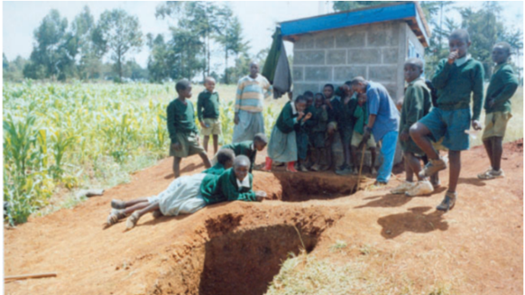

|
Sanitation -safe disposal of human waste
Proper sanitation is critical for safe drinking water. Unfortunately, there are still many places in the world—including some parts of Canada—where poor sanitation threatens the quality of drinking water. |
2, 600, 000, 000
Approximate number of people who do not have access to basic sanitation.
1, 500, 000
Approximate number of children who die each year as a result of water-borne diseases related to poor sanitation.
Callout
A cholera epidemic, similar to the one in the 1800s in London, affected Haiti in 2010. Haiti, already one of the poorest countries in the world, was seriously damaged by an earthquake early that year. Almost 2, 000, 000 people became homeless. The earthquake destroyed much of the water and sewage infrastructure.
Improving water quality through better sanitation is an important first step to eliminating water-borne diseases. Improvements in sanitation can also have a direct impact on education. For example, international charities are finding that the construction of school latrines in developing countries significantly improved both children’s health and their school attendance

Callout
Latrines, like these under construction at Madaraka Public School, Kenya, provide students with a safe, private, and dignified place to eliminate bodily wastes.